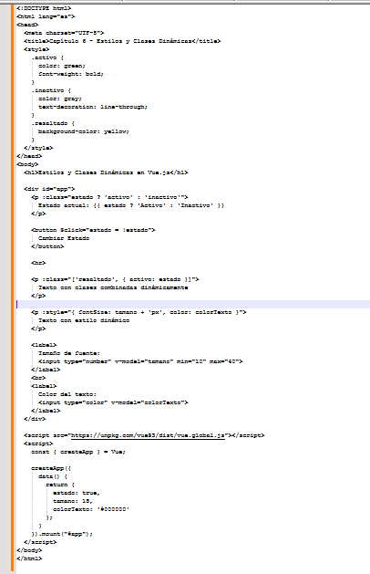

Estilos y clases dinámicas en Vue.js
Objetivo: Aprender a aplicar clases CSS y estilos en línea de forma dinámica, reaccionando a los datos del componente.
¿Por qué usar clases dinámicas?
En HTML común, las clases y estilos son fijos. Pero en Vue.js puedes vincular (bind) esos valores a variables reactivas. Así, los estilos cambian automáticamente cuando cambian tus datos.
Para ilustrar prueba el siguiente ejemplo práctico crea un archivo llamado clase-dinamica.html y prueba con el sieguiente contenido:
Siguiente